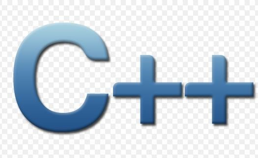

C언어
미국 벨 연구소의 리치(D. Ritchie)가 개발한 운영 체제나 언어 처리계 등의 시스템 기술에 적합한 프로그래밍 언어.
기본적인 프로그램 구조가 기술 가능하고, 비트 조작 등 세밀한 기술도 가능하다. 미니컴퓨터용 운영 체제인 유닉스의 대부분은 이 언어로 기술되어 있다. 최근에는 마이크로컴퓨터용 소프트웨어의 공통화를 꾀하기 위한 언어로서 보급되고 있다.
C언어는 많은 프로그램에 애용이되고 있으며 보급되며
프로그래밍 필수 언어로 꼽히고 있다 왜냐 프로그램하기에 간단하다
현재에도 많이 사용이 되어지고있다.
C++언어는 C언어의 발전으로 다양한 기능들이 추가가 되어서 나온 언어이다
1983 덴마크의 컴퓨터 과학자 비야네 스트롭스트룹이 C언어기반으로 발표한 프로그래밍 언어고
당연히 이 언어도 C언어로인해 나왔기 때문에 C언어와 마찬가지로 필수 언어이다

자 그럼 여기서 왜 더 발전된 C++로만 안하고 C언어도 배우고 그려는 이유는
C언어 기반이라 C++을 알려면 C언어를 알아야하고 아직도 C언어로 게임등 OS가 개발되고있는것들이 있기때문이다
하지만 이 언어의 난이도는 장담을 못한다.